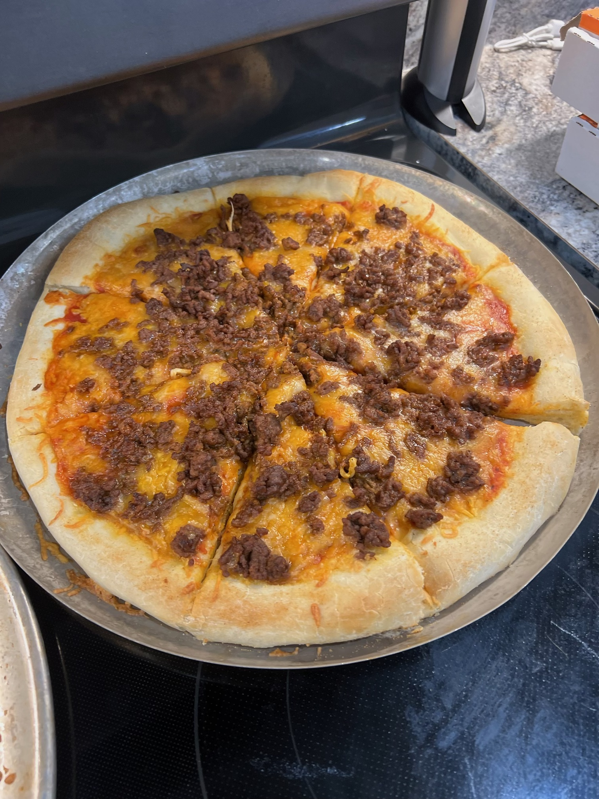

Home
Not Your Mama's Fiestadas

This hearty lasagna recipe is an easy meal that will be sure to satisfy the entire family. With several layers of gooey cheese, flavorful sauce and noodles...you can be sure everyone will be going back for seconds!
Ingredients
- 1 lb ground beef
- 2 cups tomato juice
- 1 6oz can of tomato paste
- 1 McCormick zesty seasoning packet
- 1 TBSP salt
- 1 tsp pepper
- 1 TBSP garlic powder
- 1 TBSP onion powder
- 1 tsp italian seasoning
- 15 oz ricotta cheese
- 8 oz feta cheese
- 16 oz mozzarella or italian blend cheese
- 8 oz parmesan cheese
- 1/2 lb dry lasagna noodles
How to Make Hearty Lasagna
- Start by making the sauce, season your ground beef with salt, pepper, onion, and garlic powder. Brown your seasoned meat in a pot and drain the grease. After the grease is drained, add in your zesty packet to the beef and add the tomato sauce and bring to a boil. While the meat and sauce mixture is heating up, put tomato paste in a sauce pan with olive oil and heat until the paste is brick red.
Once the tomato juice and meat comes to a boil, add the tomato paste and stir in. Put the lid on and let the sauce simmer.
- Next, cook your noodles. Boil the lasagna noodles in a pot of water 8 to 10 minutes until al dente. Drain the water and set the noodles aside to cool.
- Make your cheese mixture.Mix the ricotta and feta together and add the italian seasoning.
- Assemble the lasagna!In your baking dish, start with a layer of sauce, noodles, and the feta and ricotta mixture. Keep layering the sauce, noodles, and Italian blend/mozzarella cheese until you're to the top of the baking dish. Top with the extra shredded cheese.
- Time to bake!Cover with tinfoil, and put in the oven at 350 degrees for 30 minutes. Then remove the tinfoil and bake for 5 to 10 minutes until cheese is bubbling and brown.